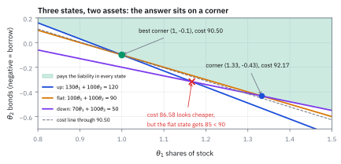
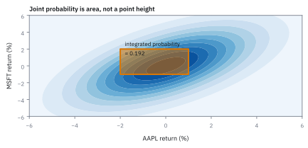

5.1 Setting Up the Hedging Problem
แปลงโจทย์การจัดสรรให้เป็นตัวแปร เป้าหมาย และข้อจำกัด
ปีหน้าคุณต้องจ่าย 120 ถ้าตลาดขึ้น 90 ถ้าทรงตัว 50 ถ้าลง วันนี้มีหุ้นราคา 100 (ปีหน้าเป็น 130/100/70) กับพันธบัตรราคา 95 (คืน 100 เสมอ) ต้องจ่ายวันนี้อย่างน้อยเท่าไรจึงจ่ายภาระได้ครบทุกกรณี?
เฉลย: 90.50 โดยซื้อหุ้น 1 หุ้นและ short พันธบัตร 0.1 หน่วย ได้ 120, 90, 60 ครบทุกกรณี แผนที่ดูถูกกว่าที่ 86.58 จ่ายกรณีทรงตัวได้แค่ 85 จึงใช้ไม่ได้
hedging problem คือการเลือกจำนวนสินทรัพย์ให้ payoff ไม่ต่ำกว่าภาระในทุกสภาวะด้วยต้นทุนต่ำสุด เมื่อทุกอย่างเป็นเส้นตรงมันคือ linear program งานจริงใช้ตั้งราคา structured product และเลือก hedge ภายใต้ limit
ศัพท์ที่ใช้ในหัวข้อนี้
- hedge
- position ที่ตั้งใจชดเชย risk direction ของ position หลัก ใช้ลด exposure ที่ desk ไม่ต้องการโดยยังเก็บ investment thesis ส่วนอื่นไว้
- basket
- กลุ่ม securities ที่ desk จัดการเป็น position เดียว ใช้รวม notional และ risk exposures ก่อนออกแบบ hedge
- long position
- position ที่ได้กำไรเมื่อราคาสินทรัพย์สูงขึ้นและขาดทุนเมื่อราคาลดลง ใช้ถือ investment exposure ที่ desk ต้องการ
- short position
- position ที่ขายสินทรัพย์ยืมมาก่อนและได้กำไรเมื่อราคาลดลง ใช้หักล้าง positive market exposure ของ long basket
- order
- คำสั่งซื้อหรือขาย instrument พร้อม direction และ quantity ใช้ส่ง trade ที่ model เลือกไปยังตลาด
- execution desk
- ทีมที่แปลง portfolio decision เป็น market orders และจัดการ timing, liquidity กับต้นทุนใช้ทำให้ hedge เกิดขึ้นจริง
- bid-ask spread
- ส่วนต่างระหว่างราคาที่ตลาดพร้อมซื้อกับราคาที่ตลาดพร้อมขาย ใช้เป็นองค์ประกอบหนึ่งของ execution cost
- market impact
- การเปลี่ยนราคาที่เกิดจาก order ของเราเองเมื่อใช้ liquidity ในตลาด ใช้ประมาณ execution cost ที่เพิ่มตาม trade size
- linear program (LP)
- ปัญหาที่ optimize linear objective ภายใต้ linear constraints ใช้เลือก trade sizes เมื่อ risk, liquidity และ cost limits ต้องทำงานพร้อมกัน
- feasible region
- เซตของ decision variables ที่ผ่าน constraints ทุกข้อ ใช้แยก order ที่ส่งได้จริงออกจากตัวเลขที่ดูดีแต่ผิด mandate
- objective function
- quantity ที่ต้องการ minimize หรือ maximize ใช้บอก solver ว่าใน feasible region desk ต้องการคำตอบแบบใด
- constraint
- เงื่อนไขที่คำตอบต้องเคารพ ใช้ใส่ beta target, non-negativity และ liquidity caps ลงใน model
- liability
- เงินที่ต้องจ่ายในอนาคตซึ่งขึ้นกับว่าตลาดไปทางไหน ใช้เป็นเป้าที่ payoff ของพอร์ต hedge ต้องไม่ต่ำกว่าในทุกสภาวะ
- arbitrage
- พอร์ตที่ได้เงินวันนี้หรือไม่ต้องจ่าย แต่ไม่มีทางขาดทุนในอนาคต ใช้ตรวจว่า LP มีก้นบึ้ง ถ้ามี arbitrage ต้นทุนจะดิ่งลงได้ไม่สิ้นสุด
- incomplete market
- ตลาดที่มีสภาวะมากกว่าทิศที่สินทรัพย์สร้างได้ ใช้อธิบายว่าทำไม hedge ต้องเหลือเงินทิ้งบางสภาวะ และทำไมราคาของภาระเป็นช่วง ไม่ใช่เลขเดียว
- beta
- sensitivity เชิงเส้นของผลตอบแทนต่อ market return ใช้แปลง position notional เป็น market exposure ที่นำมาหักล้างกันได้
- notional
- มูลค่าอ้างอิงของ position ใช้แปลง hedge ratio หรือ beta ให้เป็นขนาด order หน่วย USD
- liquidity cap
- ขนาด order สูงสุดที่ desk อนุญาตใน instrument หนึ่ง ใช้จำกัด market impact และ execution risk
สัญลักษณ์ที่ใช้ในหัวข้อนี้
| สัญลักษณ์ | ความหมาย | หน่วย |
|---|---|---|
| $N$ | notional ของ semiconductor basket | USD million |
| $\beta_B$ | market beta เริ่มต้นของ basket | ไม่มีหน่วย |
| $\beta^*$ | market beta สูงสุดที่ mandate อนุญาต | ไม่มีหน่วย |
| $x_Q,x_S$ | ขนาด short QQQ และ SPY ตามลำดับ | USD million |
| $x_Q^*,x_S^*,C^*$ | ขนาด hedge ที่ดีที่สุดของแต่ละตัว และต้นทุนการเทรดต่ำสุดที่ขนาดคู่นั้นทำได้ | USD million, USD million, USD |
| $\beta_Q,\beta_S$ | market beta ของ QQQ และ SPY | beta-USD million ต่อ USD million |
| $b$ | beta exposure ขั้นต่ำที่ hedge ต้องลด | beta-USD million |
| $R$ | residual market beta ของ basket หลัง hedge | ไม่มีหน่วย |
| $c_Q,c_S$ | execution cost ต่อ notional QQQ และ SPY | USD ต่อ USD million |
| $C$ | estimated execution cost รวม | USD |
| $m,d$ | จำนวนสภาวะตลาด ณ $t=1$ และจำนวนสินทรัพย์ที่ซื้อขายได้ | จำนวน |
| $p$ | vector ราคาของสินทรัพย์ ณ เวลา $t=0$ | USD ต่อหน่วย |
| $\theta$ | vector จำนวนหน่วยที่ถือ ติดลบคือ short | หน่วย |
| $S$ | ตาราง payoff แถวคือสภาวะ คอลัมน์คือสินทรัพย์ | USD ต่อหน่วย |
| $X$ | vector ภาระที่ต้องจ่ายในแต่ละสภาวะ | USD |
| $\Delta\theta$ | ทิศที่ขยับจำนวนหน่วยจากแผนเดิม | หน่วย |
ที่มาที่ไป: งานที่ยากที่สุดคือการเขียนโจทย์ ไม่ใช่การแก้
คนที่เพิ่งเริ่มงานสายนี้มักคิดว่างานหลักคือการแก้สมการ แต่ในความเป็นจริงคอมพิวเตอร์แก้ให้หมดแล้ว
งานที่เหลือให้มนุษย์คือการแปลงความต้องการที่คลุมเครือ ให้กลายเป็นตัวแปร เป้าหมาย และข้อจำกัดที่ชัดเจน ซึ่งเป็นงานที่ต้องเข้าใจทั้งธุรกิจและคณิตศาสตร์พร้อมกัน
ความยากอยู่ตรงที่เป้าหมายจริงมักมีหลายข้อและขัดกันเอง เช่นอยากลดความเสี่ยงแต่ก็ไม่อยากจ่ายค่าธรรมเนียม การตัดสินว่าอะไรเป็นเป้าหมายและอะไรเป็นข้อจำกัด เป็นการตัดสินใจเชิงธุรกิจ ไม่ใช่คณิตศาสตร์
หัวข้อนี้จึงเป็นบทที่ไม่มีสูตรใหม่เลย แต่เป็นบทที่ตัดสินว่าทุกสูตรที่เหลือจะถูกใช้ถูกที่หรือไม่
ที่มาและวิวัฒนาการ: จากการเดาตัวต่อตัวสู่ state-space และ factor hedging
ในยุคก่อนทศวรรษ 1970 ผู้จัดการกองทุนและเทรดเดอร์ในห้องค้าใช้วิธีป้องกันความเสี่ยงแบบจับคู่ตัวต่อตัว (heuristic hedging) เช่น เมื่อถือหุ้นกลุ่มเทคโนโลยีก็พยายามหาหุ้นหรือสัญญาที่คล้ายกันมา short ในสัดส่วนหนึ่งต่อหนึ่งตามสัญชาตญาณ วิธีนี้ใช้ได้กับพอร์ตขนาดเล็กที่มีสินทรัพย์ไม่กี่ตัว แต่เมื่อพอร์ตขยายใหญ่และมีข้อจำกัดด้านสภาพคล่องเข้ามาเกี่ยวข้อง การกะด้วยสายตามักนำไปสู่ความล้มเหลว เพราะไม่สามารถชั่งน้ำหนักระหว่างต้นทุนการทำรายการกับความเสี่ยงได้อย่างแม่นยำ
จุดเปลี่ยนสำคัญเกิดขึ้นเมื่อแบบจำลอง state-preference theory ของ Kenneth Arrow และ Gérard Debreu ในทศวรรษ 1950–1960 ถูกนำมาผสานกับ linear programming ของ George Dantzig ที่คิดค้นขึ้นในปี 1947 Martin Haugh และ Garud Iyengar แห่ง Columbia University ได้สรุปโครงสร้างนี้เป็น hedging problem บน finite state space ซึ่งมองว่าตลาดในอนาคตมีสภาวะที่เป็นไปได้ $m$ สถานะ และพอร์ตมีภาระผูกพันหรือความเสี่ยงที่ต้องชดเชยในทุกสถานะ
เมื่อแปลงโจทย์ความเสี่ยงข้ามสภาวะตลาด ($S\theta \ge X$) ให้อยู่ในรูปของ exposure ต่อปัจจัยตลาดร่วม (market factor beta) ปัญหาการ hedge จึงกลายสภาพเป็น linear program ที่มี objective function เป็นต้นทุนการทำรายการ และมี constraints เป็นระดับความเสี่ยงที่ยอมรับได้ควบคู่กับเพดานสภาพคล่องของ desk ทำให้ระบบคอมพิวเตอร์สามารถหาคำตอบที่ดีที่สุดได้โดยตรง แทนที่การคาดเดาของมนุษย์
ตัวอย่างแรก — ภาระสามสภาวะ กับของสองอย่างที่ซื้อได้
เริ่มจากโจทย์เปิดเรื่องและแก้ด้วยมือทีละขั้น ทุกอย่างที่ solver ทำอยู่ในแปดขั้นนี้ครบ แล้วค่อยเขียนเป็นสูตรทั่วไป
ขั้นที่ 1 — ของที่โจทย์ให้: ราคา ตาราง payoff และภาระ
ปีหน้าตลาดไปได้สามทาง ขาขึ้น ทรงตัว ขาลง ภาระที่ต้องจ่ายต่างกันตามทาง วันนี้มีหุ้นกับพันธบัตรให้ซื้อ ตัวเลขชุดนี้คือของที่โจทย์ให้ ไม่ได้คำนวณมา
หุ้นราคา 100 วันนี้ ปีหน้าเป็น 130, 100 หรือ 70 พันธบัตรราคา 95 คืน 100 ทุกสภาวะเพราะไม่มีความเสี่ยง แถวคือสภาวะ คอลัมน์คือสินทรัพย์ มีสามสภาวะแต่มีของสองอย่าง จำคู่เลข 3 กับ 2 นี้ไว้
ตัวแปรที่ต้องเลือกคือ θ₁ จำนวนหุ้น และ θ₂ จำนวนพันธบัตร ติดลบได้ทั้งคู่: θ₁ ติดลบคือ short หุ้น θ₂ ติดลบคือกู้เงินด้วยการขายพันธบัตร
ขั้นที่ 2 — ต้นทุนวันนี้ และแผนแรกที่ใช้ได้แน่
เงินที่จ่ายวันนี้คือราคาคูณจำนวนของแต่ละอย่าง ต้องการให้น้อยที่สุดเพราะเป็นเงินออก ก่อนหาแผนที่ดีที่สุด หาแผนที่ใช้ได้สักแผนก่อน
หน่วยตรวจได้ทันที: USD ต่อหน่วยคูณจำนวนหน่วยได้ USD แผนที่ปลอดภัยที่สุดคือถือพันธบัตร 1.2 หน่วย ได้ 120 ทุกสภาวะจึงจ่ายครบแน่ แต่แพง 114 ตัวเลขนี้เป็นเพดาน คำตอบที่ดีที่สุดต้องไม่แพงกว่านี้
ขั้นที่ 3 — ข้อจำกัดทีละสภาวะ: เกินได้ ขาดไม่ได้
แต่ละสภาวะให้หนึ่งแถว payoff ของพอร์ตในสภาวะนั้นต้องไม่น้อยกว่าภาระของสภาวะนั้น
แถวขาขึ้นอ่านว่า ถ้าตลาดขึ้น หุ้นหนึ่งหุ้นขายได้ 130 พันธบัตรหนึ่งหน่วยคืน 100 รวมกันต้องได้ไม่น้อยกว่าภาระ 120
ใช้ ≥ ไม่ใช่ = เพราะถ้าบังคับให้เท่ากันพอดีจะได้สามสมการสองตัวแปร ซึ่งไม่มีคำตอบ เจ้าหนี้ไม่ว่าถ้ามีเงินเหลือ และเป้าหมายที่ต้องการต้นทุนต่ำสุดจะรีดเงินส่วนเกินออกเอง
ขั้นที่ 4 — ต้นทุนดิ่งลงไม่รู้จบได้ไหม: ตรวจว่าไม่มีเงินฟรี
ถ้ามีทิศที่ payoff ไม่ลดลงในสภาวะใดเลยแต่ต้นทุนติดลบ เราจะเดินไปทางนั้นได้ไม่สิ้นสุด นั่นคือ arbitrage ในสองมิติมีทิศที่ต้องตรวจสองทิศ คือทิศที่เดินเลียบขอบแต่ละด้าน
ทิศ A ทำให้แถวขาลงไม่ขยับ ทิศ B ทำให้แถวขาขึ้นไม่ขยับ ทั้งสองทิศเพิ่ม payoff ได้ แต่ต้องจ่ายเพิ่ม 33.5 และ 23.5 ไม่มีทิศไหนได้ของฟรี ต้นทุนจึงมีก้นบึ้ง
ประโยคที่ควรจำ: LP นี้มีคำตอบจำกัดพอดีเมื่อตลาดไม่มี arbitrage เงื่อนไขทางการเงินกับเงื่อนไขทางคณิตศาสตร์เป็นเรื่องเดียวกัน
ขั้นที่ 5 — ผู้สมัครอยู่ที่มุม: ให้ข้อจำกัดสองข้อเท่ากันพอดี
เส้นต้นทุนคงที่เป็นเส้นตรง เลื่อนไปทางที่ถูกลงจนจะหลุดออกจากบริเวณที่ใช้ได้ จุดสุดท้ายที่ยังแตะอยู่คือมุม มีตัวแปรสองตัวจึงต้องใช้สองสมการตรึงจุด เลือก 2 จาก 3 ได้ 3 คู่
แต่ละบรรทัดลบสองสมการกัน พันธบัตรที่คืน 100 ทุกสภาวะหักกันหายพอดี เหลือหุ้นตัวเดียว คู่แรก 130θ₁ − 100θ₁ = 30θ₁ และ 120 − 90 = 30 จึงได้ θ₁ = 1 แทนกลับในแถวทรงตัว 100θ₂ = 90 − 100 = −10 ได้ θ₂ = −0.1
คู่ที่สองแทนกลับในแถวขาลง 100θ₂ = 50 − 70(1.1667) = −31.67 คู่ที่สาม 100θ₂ = 50 − 70(1.3333) = −43.33 นี่คือแก่นของ simplex: ไม่ค้นทั้งบริเวณ ค้นแค่มุม
ขั้นที่ 6 — เสียบกลับทุกแถว: ถูกที่สุดไม่ได้แปลว่าใช้ได้
มุมแต่ละมุมทำให้สองแถวเท่ากันพอดี แต่ยังไม่รู้ว่าแถวที่สามผ่านไหม ต้องเสียบกลับก่อนเทียบราคา
มุมแรกถูกที่สุด 86.58 แต่สภาวะทรงตัวได้แค่ 85 ขาดไป 5 จึงตกรอบ ถ้าหยิบไปตอบโดยไม่ตรวจ จะได้พอร์ตที่จ่ายภาระไม่ครบในปีที่ตลาดทรงตัว
สองมุมที่รอดมีต้นทุน 90.50 กับ 92.17 ผู้ชนะคือ θ = (1, −0.1) กฎของ LP คือทุกครั้งที่แก้จากข้อจำกัดบางข้อ ต้องเอาคำตอบไปเสียบข้อที่เหลือทุกข้อ
ขั้นที่ 7 — พิสูจน์ว่าหยุดที่มุมนี้จริง: เดินออกทางไหนก็แพงขึ้น
จากมุม (1, −0.1) มีขอบให้เดินออกสองเส้น คือเลียบแถวขาขึ้นหรือเลียบแถวทรงตัว ลองเดินทีละเส้นแล้วดูต้นทุน
เดินเลียบขอบขาขึ้นต้นทุนเพิ่ม 23.5 ต่อก้าว เดินเลียบขอบทรงตัวต้นทุนเพิ่ม 5 ต่อก้าว และเดินได้ถึง s = 1/3 ก็ชนแถวขาลง ไปโผล่ที่มุม (ทรงตัว, ขาลง) ต้นทุน 92.17 ตรงกับขั้นที่ 6 ออกทางไหนก็แพงขึ้น จุดนี้จึงต่ำสุดจริง
ตัวเลขที่ทำให้หยุดได้มีชื่อ: หาน้ำหนักสองตัวที่ 130u₁ + 100u₂ = 100 และ 100u₁ + 100u₂ = 95 ได้ u₁ = 1/6 และ u₂ = 0.7833 บวกทั้งคู่ หัวข้อ 5.3 จะอ่านสองตัวนี้เป็นราคาของเงินหนึ่งดอลลาร์ในแต่ละสภาวะ
Figure 5.1a — สามสถานะ สองสินทรัพย์ คำตอบอยู่ที่มุม

พื้นที่สีเขียวคือแผนที่จ่ายภาระครบทุกสภาวะ เส้นประคือเส้นต้นทุน 90.50 ที่แตะพื้นที่ที่มุม (1, −0.1) พอดี กากบาทแดงคือมุม 86.58 ที่อยู่นอกพื้นที่เพราะสภาวะทรงตัวได้แค่ 85
ขั้นที่ 8 — อ่านคำตอบเป็นกระแสเงินสด และทำไมต้องเหลือเงินทิ้ง 10
แปลงจำนวนหน่วยกลับเป็นเงินที่ไหลวันนี้และปีหน้า แล้วดูว่าแต่ละสภาวะเหลือเท่าไร
ซื้อหุ้น 1 หุ้นจ่าย 100 ขาย short พันธบัตร 0.1 หน่วยรับ 9.50 ซึ่งคือการกู้เงิน เงินออกสุทธิ 90.50 ปีหน้าต้องคืนพันธบัตร 0.1 × 100 = 10 ทุกสภาวะ สภาวะขาขึ้นและทรงตัวจ่ายพอดี ขาลงเหลือ 10
ที่ต้องเหลือเพราะมีของให้ผสมแค่สองอย่างแต่มีสามสภาวะ payoff ที่สร้างได้ทั้งหมดเป็นแผ่นสองมิติในพื้นที่สามมิติ และภาระ (120, 90, 50) ไม่ได้อยู่บนแผ่นนั้น จึงทำให้ตรงครบสามช่องไม่ได้ ตลาดแบบนี้เรียกว่า incomplete market
ราคาของภาระนี้จึงเป็นช่วง: พอร์ตถูกสุดที่ไม่ต่ำกว่าภาระทุกสภาวะคือ 90.50 ส่วนมุมที่ตกรอบในขั้นที่ 6 ให้ 120, 85, 50 ซึ่งไม่เกินภาระทุกสภาวะ ราคา 86.58 ช่วง [86.58, 90.50] กว้าง 3.92
คำตอบ — ภาระ 120/90/50 เฮดจ์ได้ถูกสุด 90.50
คำถาม: ต้องถือหุ้นและพันธบัตรเท่าไร จ่ายวันนี้เท่าไร และทำไมไม่ใช่แผนที่ถูกกว่านี้?
ของที่มี: ขั้นที่ 1 ถึง 8
1 พอร์ตคือซื้อหุ้น 1 หุ้นและ short พันธบัตร 0.1 หน่วย
2 ต้นทุน 100 − 9.5 = 90.50
3 ที่มุมนี้ข้อจำกัดขาขึ้นและทรงตัวชนพอดี เดินออกทางไหนต้นทุนเพิ่ม 23.5 หรือ 5 ต่อก้าว ส่วนแผน 86.58 จ่ายสภาวะทรงตัวได้แค่ 85
เฉลย: θ* = (1, −0.1) ต้นทุนต่ำสุด 90.50
เช็ก 10 วินาที: 130 − 10 = 120, 100 − 10 = 90, 70 − 10 = 60 ≥ 50 และ 100 − 9.5 = 90.5
งานจริง: นี่คือแม่แบบของงาน structuring ลูกค้าส่งภาระที่ผูกกับสภาวะตลาดมา ราคาที่ต้องเก็บคือต้นทุนพอร์ต hedge ที่ถูกที่สุด 90.50 บวกกำไรที่ desk ต้องการ ไม่ใช่ค่าเฉลี่ยของภาระตามความน่าจะเป็น (expected value) และเพราะตลาดไม่สมบูรณ์ ฝั่งขายใช้ 90.50 ฝั่งซื้อใช้ 86.58
กับดัก: อย่าใส่ θ ≥ 0 เองเพราะเห็นว่าเป็นจำนวนที่ซื้อ คำตอบที่ถูกมี θ₂ = −0.1 ถ้าห้าม short คำตอบย้ายไปซื้อหุ้น 0.9231 หุ้นโดยไม่มีพันธบัตร ต้นทุน 92.31 แพงขึ้น 1.81 เครื่องหมายของตัวแปรเป็นข้อมูลของโจทย์ ไม่ใช่ธรรมเนียมของสูตร
โค้ดตรวจมุมทั้งสามและคำตอบ
import numpy as np
S=np.array([[130,100],[100,100],[70,100.]]); X=np.array([120,90,50.]); p=np.array([100,95.])
th=np.linalg.solve(S[[0,1]],X[[0,1]])
assert np.allclose(th,[1.0,-0.1]) and abs(p@th-90.5)<1e-9
assert np.allclose(S@th,[120,90,60])
bad=np.linalg.solve(S[[0,2]],X[[0,2]])
assert abs(p@bad-86.5833)<1e-3 and (S@bad)[1]<90
other=np.linalg.solve(S[[1,2]],X[[1,2]])
assert abs(p@other-92.1667)<1e-3 and (S@other>=X-1e-9).all()
u=np.linalg.solve(S[[0,1]].T,p)
assert np.allclose(u,[1/6,0.95-1/6])โค้ดนี้แก้สามมุม ตรวจว่ามุม 86.58 ตกแถวทรงตัว มุม 90.50 ผ่านทุกแถว และน้ำหนัก 1/6 กับ 0.7833 ที่ทำให้หยุดได้ ถ้าใช้ solver ให้ปล่อยตัวแปรติดลบได้ ไม่เช่นนั้นจะได้ 92.31
นิยาม — ต้นทุน payoff และเงื่อนไข hedge เมื่อมี m สภาวะและ d สินทรัพย์
ขั้นที่ 1 ถึง 8 ทำด้วยตัวเลข m = 3 และ d = 2 บรรทัดข้างล่างเขียนเรื่องเดียวกันให้ใช้ได้กับกี่สภาวะกี่สินทรัพย์ก็ได้ position $\theta$ ต้องให้ payoff ไม่น้อยกว่า $X$ ในทุกสภาวะ โดยมีต้นทุนรวมต่ำที่สุด
เริ่มต้นจากสินทรัพย์ $d$ ตัวที่มีราคา ณ เวลาปัจจุบันเป็น vector $p$ ต้นทุนรวมในการตั้ง position ขนาด $\theta$ คือผลคูณภายใน $p^{\mathsf T}\theta$ ซึ่งเป็น linear objective function ที่ต้องการ minimize
เมื่อเวลาผ่านไปถึง $t=1$ ตลาดจะอยู่ในสภาวะใดสภาวะหนึ่งจาก $m$ สถานะ กระแสจ่ายของสินทรัพย์ทั้งหมดรวมกันเป็น matrix $S$ ทำให้ payoff รวมในแต่ละสถานะเขียนได้เป็น vector $y=S\theta$
เงื่อนไขการ hedge คือ payoff ที่ได้ต้องคุ้มครองภาระผูกพัน $X$ ได้ครบทุกสถานะ นั่นคือ $y \ge X$ การประกอบสองส่วนนี้เข้าด้วยกันจึงได้ linear program มาตรฐานที่นำไปประยุกต์สู่ factor hedging ในพอร์ตจริง
ตัวอย่างที่สอง — hedge beta ของ basket ด้วย QQQ และ SPY
โครงเดียวกันใช้กับ hedge ความเสี่ยงตลาดของ basket หุ้น โจทย์ให้อะไรมาบ้าง: กำหนด $N=12$, $\beta_B=1.10$ และ target $\beta^*=0.20$ ส่วน QQQ กับ SPY มี beta 1.20 และ 1.00 จำกัด short ตัวละ \$6 ล้าน และมี cost \$180 กับ \$90 ต่อ notional \$1 ล้าน ตามลำดับ ทุกตัวเลขเป็น assumption ของ pre-trade model ที่ต้องเก็บ timestamp และ re-estimate เมื่อ liquidity เปลี่ยน
ขั้นที่ 9 — ลองแผนที่เห็นก่อนเลย: ใช้ตัวเดียว แล้วดูว่าชนรั้วไหม
ก่อนเขียนสมการอะไร ลองแก้ด้วยสามัญสำนึก: ต้องลด beta 10.8 หน่วย มีเครื่องมือสองตัว ลองใช้ทีละตัว
สองแผนแรกล้มเหลวด้วยเหตุผลเดียวกัน คือขายเกินเพดานสภาพคล่อง 6 ต่อตัว ต้องผสม
บรรทัดที่เจ็ดถึงแปดคือคำถามที่ถูก: ไม่ใช่ “ตัวไหนถูกกว่าต่อดอลลาร์” แต่ “ตัวไหนถูกกว่าต่อหนึ่งหน่วย beta ที่ลดได้” SPY ชนะ (90 ต่อ 150) จึงใช้ SPY จนชนเพดาน แล้วให้ QQQ เติมส่วนที่ขาด $4.8/1.2=4$
ทั้งหัวข้อที่เหลือคือการเขียนความคิดในสูตรนี้ให้เป็นภาษาที่คอมพิวเตอร์รับได้ ตัวเลข 4 กับ 6 จะโผล่มาอีกครั้งตอนท้าย
เครื่องหมายกากบาทในหกบรรทัดแรกหมายถึงแผนนั้นชนเพดานสภาพคล่องที่ 6 จึงทำไม่ได้จริง ตัวเลขค่าใช้จ่ายข้างหลังคือค่าที่จะต้องจ่ายถ้าทำได้ ใส่ไว้เพื่อเทียบเท่านั้น
บรรทัดที่เจ็ดถึงแปดหารค่าใช้จ่ายด้วย beta ที่ลดได้ต่อหนึ่งหน่วย SPY ถูกกว่าต่อหนึ่งหน่วย beta จึงควรใช้ให้เต็มเพดานก่อน
สองบรรทัดล่างใช้ SPY เต็ม 6 แล้วให้ QQQ รับส่วนที่เหลือ ซึ่งอยู่ในเพดานพอดี
ขั้นที่ 10 — คำนวณ beta exposure ที่ต้องลด
เริ่มจากวัดว่าปัญหาใหญ่แค่ไหน คือพอร์ตนี้เกาะตลาดอยู่กี่ดอลลาร์
ความเสี่ยงของพอร์ตวัดด้วย dollar beta เริ่มจากขนาดพอร์ต $N=12$ ล้านดอลลาร์คูณด้วย beta เริ่มต้น 1.10 ได้ปริมาณความเสี่ยงตั้งต้น 13.20 beta-USD million
เป้าหมายความเสี่ยงใหม่กำหนดไว้ที่ beta 0.20 คิดเป็น dollar beta เพดานสูงสุดไม่เกิน 2.40 beta-USD million
ผลต่างระหว่างความเสี่ยงตั้งต้นกับเป้าหมายใหม่คือปริมาณความเสี่ยง $b=10.80$ beta-USD million ที่ position ป้องกันความเสี่ยงต้องดูดซับออกไปทั้งหมด การคำนวณแยกสองขั้นทำให้เห็นที่มาของตัวเลข 10.8 อย่างชัดเจน
ขั้นที่ 11 — เขียน residual beta และ risk constraint
แปลงเป้าหมายว่าลดความเสี่ยงตลาด ให้เป็นข้อบังคับที่เขียนเป็นสมการได้ สี่บรรทัดนี้เป็นพีชคณิตล้วน แต่ต้องเขียนออกมาให้ครบ เพราะมีการพลิกเครื่องหมายอยู่หนึ่งครั้ง และการพลิกผิดคือความต่างระหว่างการ hedge กับการเพิ่มความเสี่ยงเป็นสองเท่า
งานของขั้นนี้คือแปลเป้าหมายที่พูดเป็นคำ ให้กลายเป็นข้อบังคับที่เขียนเป็นสมการได้ เริ่มจาก beta ที่เหลือหลัง hedge ต้องไม่เกิน 0.20 แล้วย้าย 1.10 ไปอีกข้าง ได้ขอบขวาเป็น −0.90
จุดที่ต้องระวังอยู่บรรทัดสาม: คูณทั้งสองข้างด้วย −1 เครื่องหมายอสมการต้องพลิก การพลาดตรงนี้คือความต่างระหว่างการ hedge กับการเพิ่มความเสี่ยงเป็นสองเท่า สุดท้ายคูณ 12 ล้างตัวหาร ได้ 10.8 ซึ่งอ่านว่า hedge ต้องลดความเสี่ยงตลาดอย่างน้อย 10.8 หน่วย ไม่ใช่ความตั้งใจลอย ๆ
ขั้นที่ 12 — ของที่โจทย์ให้: domain และเพดานสภาพคล่อง
สองก้อนนี้เป็น ของที่โจทย์ให้ ไม่ได้คำนวณมา ของจริงมีข้อจำกัดที่ตำราไม่พูดถึง เช่นขายได้ไม่เกินสภาพคล่องที่มีในวันนั้น เลขศูนย์ด้านซ้ายบังคับว่าขนาดคำสั่งติดลบไม่ได้ ส่วนเลข 6 ด้านขวามาจากนโยบายสภาพคล่องของ desk
เงื่อนไขชุดแรกกำหนดให้ตัวแปรไม่ติดลบ เพราะเราต้องการ short สินทรัพย์เพื่อลดความเสี่ยง การใส่ค่าติดลบจะกลายเป็นการเปิดสถานะซื้อเพิ่มซึ่งตรงข้ามกับวัตถุประสงค์
เงื่อนไขชุดที่สองจำกัดขนาดคำสั่งขายไม่ให้เกิน \$6 ล้านต่อตัวตามเพดานสภาพคล่องของ desk เพื่อป้องกันไม่ให้เกิด market impact รุนแรง
เมื่อรวมสองฝั่งเข้าด้วยกันจะได้ box constraints ช่วงปิดระหว่าง 0 ถึง 6 สำหรับทั้งสองสินทรัพย์
ขั้นที่ 13 — เขียน cost objective และเทียบประสิทธิภาพ
เมื่อมีหลายวิธีที่ทำได้ ต้องมีเกณฑ์เลือก ซึ่งที่นี่คือต้นทุนรวมที่ต่ำที่สุด
การเปรียบเทียบเครื่องมือต้องวัดต้นทุนต่อหนึ่งหน่วย beta ที่ลดได้ QQQ มีต้นทุน \$180 และลด beta ได้ 1.20 จึงมีต้นทุนประสิทธิผล \$150 ต่อหนึ่งหน่วย
SPY มีต้นทุน \$90 และลด beta ได้ 1.00 คิดเป็นต้นทุน \$90 ต่อหนึ่งหน่วย ซึ่งประหยัดกว่า QQQ อย่างชัดเจน
ผลรวมต้นทุนทั้งหมดเขียนเป็น linear objective function ที่ต้องการ minimize ภายใต้ข้อจำกัดว่าผลรวม beta ที่ลดได้ต้องไม่ต่ำกว่า 10.8 หน่วย
ขั้นที่ 14 — ตรวจ optimum ด้วยตัวเลขครบ
ตรวจว่าคำตอบที่ได้ผ่านทุกข้อบังคับจริง ก่อนจะเชื่อมัน
อ่านสูตรนี้เป็นคำตอบได้เลย: beta ที่ตัดออกได้ 10.8 พอดีตามที่ต้องการ residual beta เหลือ 0.20 ตามเป้า และจ่ายค่าเทรด \$1,260 จุดนี้จึงใช้ได้จริงและรู้ต้นทุนก่อนส่งคำสั่ง
ใช้ SPY เต็ม cap \$6 ล้าน แล้ว QQQ \$4 ล้าน เติม beta exposure อีก 4.8 ทำให้รวมเป็น 10.8 และ residual beta เท่ากับ 0.20 พอดี Cost คือ \$720 บวก \$540 รวม \$1,260
แล้วเอาไปใช้ทำอะไรได้จริงบ้าง
การแปลงโจทย์ธุรกิจให้เป็นตัวแปร เป้าหมาย และข้อจำกัด คือทักษะที่ใช้ได้กับทุกปัญหาในเล่มนี้
ใช้ตอนรับโจทย์จากหัวหน้าโต๊ะ ที่มักมาในรูปประโยคพูด เช่นลดความเสี่ยงตลาดให้เหลือน้อยที่สุด โดยอย่าขายของที่สภาพคล่องต่ำ งานแรกคือแปลงประโยคนั้นเป็นสมการ
ใช้คุยกับทีมความเสี่ยงและทีมกำกับ เพราะข้อจำกัดที่เขียนเป็นสมการตรวจสอบได้ ไม่ต้องตีความ
ใช้ก่อนเขียนโค้ดเสมอ ถ้าเขียนโจทย์ไม่ได้ก็เขียนโปรแกรมไม่ได้
Figure 5.1b — พื้นที่คำตอบของ LP สำหรับ hedge

พื้นที่สีเขียวอยู่เหนือ beta boundary และอยู่ใน liquidity box เท่านั้น จุด (4,6) เป็นมุมแรกที่ใช้ SPY เต็ม cap แล้วผ่าน target พอดี
Figure 5.1c — เส้นระดับต้นทุนแตะขอบพื้นที่คำตอบ

Cost contours มี slope -2 เพราะ QQQ แพงกว่า SPY ต่อ notional เส้น \$1,260 เป็นเส้นต่ำสุดที่แตะ feasible region ที่ (4,6)
Figure 5.1d — กระทบยอด beta

Basket beta 1.10 ถูกลด 0.40 ด้วย QQQ และ 0.50 ด้วย SPY จึงเหลือ residual beta 0.20 ตัวเลขทั้งสี่ต้อง reconcile ก่อนส่ง order
Figure 5.1e — ต้นทุนต่อ beta ที่ตัดออกได้หนึ่งหน่วย

SPY ลด market beta ได้ถูกกว่าต่อหนึ่ง beta-USD million จึงถูกใช้จนเต็ม cap ส่วน QQQ ทำหน้าที่เติม requirement ที่เหลือ
คำตอบ — short SPY 6M และ QQQ 4M
คำตอบ: short SPY \$6 ล้าน และ short QQQ \$4 ล้าน ใช้ expected cost \$1,260 และลด residual market beta เหลือ 0.20 ตามเป้า
ตรวจเองใน 10 วินาที: beta ที่ตัดออกต้องเป็น 1.20×4 + 1.00×6 = 10.8 beta-USD million และต้นทุนต้องเป็น 180×4 + 90×6 = \$1,260
ใช้ตัดสินใจ: ส่งสอง orders นี้ได้ภายใต้ caps ตัวละ \$6 ล้าน แต่ต้องรายงาน semiconductor sector risk กับ single-name risk แยก เพราะ hedge นี้ปิดเฉพาะ market direction
กับดัก: ระบายสีด้านที่มี no-trade แล้วเรียกว่า feasible
constraint นี้เป็น minimum hedge requirement ดังนั้น feasible region ต้องอยู่เหนือเส้น ไม่ใช่ใต้เส้น เช็กง่าย ๆ ด้วยจุด $(0,0)$: ถ้ารูปบอกว่า no-trade ผ่าน ทั้งที่ residual beta ยัง 1.10 รูปนั้นกำลังวาด mandate กลับหัว
ข้อจำกัด: วิธีนี้สมมติอะไร และของจริงเป็นอย่างไร
| เรื่อง | วิธีนี้สมมติว่า | ของจริงเป็นอย่างไร | ผลที่ตามมาเวลาใช้งาน |
|---|---|---|---|
| การแปลงโจทย์ | โจทย์แปลงเป็นสมการได้ครบ | เป้าหมายจริงมักมีหลายข้อและขัดกันเอง | ต้องเลือกว่าอะไรเป็นเป้าหมายและอะไรเป็นข้อจำกัด ซึ่งเป็นการตัดสินใจ ไม่ใช่คณิตศาสตร์ |
| ตัวเลขที่ใส่ | รู้ค่าความเสี่ยงและต้นทุนแน่นอน | ทุก estimator มาและมีความคลาดเคลื่อน | คำตอบที่ดีที่สุดบนตัวเลขที่ผิดเล็กน้อย อาจแย่กว่าคำตอบธรรมดาที่ทนทาน |
| สภาพคล่อง | ซื้อขายได้ตามที่คำนวณ | ของบางตัวขายไม่ออกในวันที่อยากขาย | ต้องใส่เพดานสภาพคล่องเป็นข้อจำกัด ไม่ใช่หวังว่าจะขายได้ |
แถวแรกเป็นงานที่ยากที่สุดและใช้เวลามากที่สุด ส่วนการแก้สมการเป็นส่วนที่คอมพิวเตอร์ทำให้
สรุปที่ใช้ได้จริง
- ภาระ 120/90/50 เฮดจ์ด้วยหุ้นกับพันธบัตรได้ถูกสุด 90.50 ที่ θ = (1, −0.1); มุมที่ถูกกว่า 86.58 ตกแถวทรงตัว และเงินเหลือ 10 ในสภาวะขาลงคือราคาของตลาดที่ไม่สมบูรณ์
- LP มีก้นบึ้งพอดีเมื่อไม่มีทิศที่ได้ของฟรี คำตอบอยู่ที่มุม และต้องเสียบกลับทุกข้อจำกัดก่อนเชื่อ
- risk mandate แปลงเป็น $1.20x_Q+x_S\ge10.8$ พร้อม non-negative domains และ caps ตัวละ \$6 ล้าน
- objective คือ minimize execution cost หลังจากบังคับ risk constraint แล้ว
- optimum คือ short QQQ \$4 ล้าน และ SPY \$6 ล้าน; residual beta 0.20 และ cost \$1,260
- ทดสอบจุดง่ายอย่าง no-trade และ optimum ทุกครั้งเพื่อจับเครื่องหมาย constraint ที่กลับด้าน